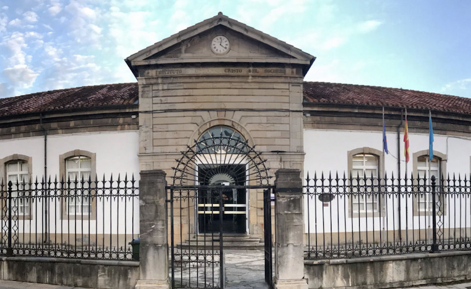

HISTORIA
El INSTITUTO CRISTO DEL SOCORRO fue la primera construcción indiana que se construyó en Luanco.
Fue promovido por el emigrante a Cuba D. Mariano Suárez Pola. El instituto, de resonancias clasicistas, se concluye en el año 1873. Aunque existen unos planos levantados en 1897 por Mariano Marín Magallán, éste no es el proyectista original de la obra, que fue anterior a esta fecha. Éste edificio se atribuye al arquitecto Víctor F. Holsbacher. El edificio original, conocido coloquialmente como “Edificio Noble”, es de planta rectangular, con cuatro crujías de una sola planta en torno a un plano central. La fachada principal, de gran sobriedad, se estructura en función de un cuerpo almohadillado central, que sobresale de la línea de cornisa y remata en clásico frontón triangular con reloj en el tímpano; a ambos lados del mismo aparecen cuatro ventanas en arco rebajado, situándose en los extremos los cuerpos que albergan las entradas secundarias, de buen sillar escuadrado. El reloj del tímpano es una de las extraordinarias piezas creadas en el siglo XIX por Basilio Sobrecueva Miyar, fundador de la famosa fábrica de relojes de Corao (Cangas de Onís).